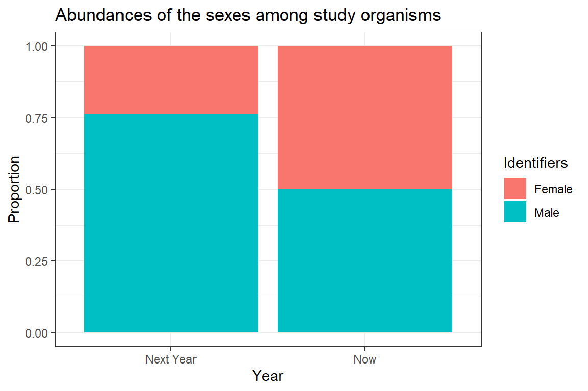
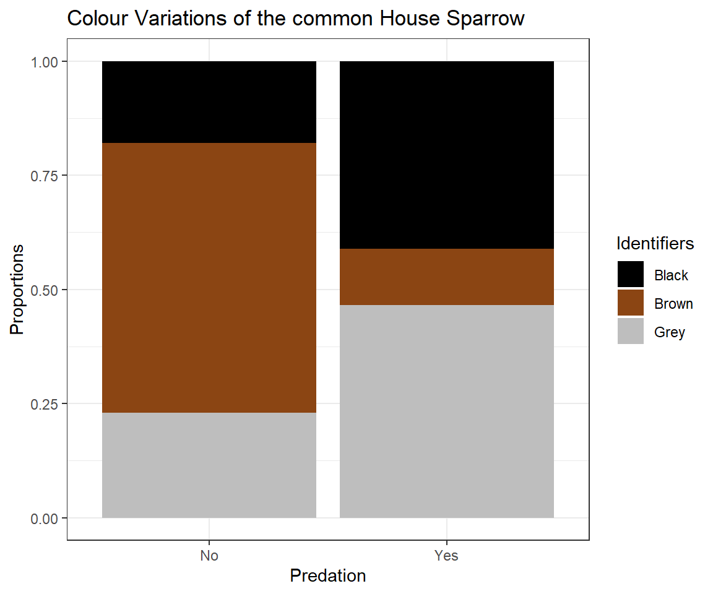

Nominal Tests
Theory
Welcome to our second practical experience in R. Throughout the following notes, I will introduce you to a couple nominal statistical test approaches that might be useful to you and are often used in biology.
To do so, I will enlist the sparrow data set we handled in our last exercise.
I have prepared some Lecture Slides for this session.
Data
Find the data for this exercise here.
Preparing Our Procedure
To ensure others can reproduce our analysis we run the following three lines of code at the beginning of our R coding file.
rm(list=ls()) # clearing environment
Dir.Base <- getwd() # soft-coding our working directory
Dir.Data <- paste(Dir.Base, "Data", sep="/") # soft-coding our data directory
Packages
Using the following, user-defined function, we install/load all the necessary packages into our current R session.
# function to load packages and install them if they haven't been installed yet
install.load.package <- function(x) {
if (!require(x, character.only = TRUE))
install.packages(x)
require(x, character.only = TRUE)
}
package_vec <- c("nonpar", # needed for Cochran's Q
"ggplot2") # data visualisation
sapply(package_vec, install.load.package)
## Loading required package: nonpar
## Loading required package: ggplot2
## nonpar ggplot2
## TRUE TRUE
Loading Data
During our last exercise (Data Mining and Data Handling - Fixing The Sparrow Data Set) we saved our clean data set as an RDS file. To load this, we use the readRDS() command that comes with base R.
Data_df_base <- readRDS(file = paste(Dir.Data, "/1 - Sparrow_Data_READY.rds", sep=""))
Data_df <- Data_df_base # duplicate and save initial data on a new object
Binomial Test
As the name would suggest, a binomial test can only accommodate variables on a binomial scale. A binomial test is used to test whether both values of the binomial variable are present in equal proportions within the data set. The only binomial variables contained within the Passer domesticus data set are Sex (Male, Female) and Predator.Presence (Yes, No). The R function to carry out a binomial test comes with base R and is called binom.test(). The Null Hypothesis we operate on is that both data values are equally likely to occur although one can specify a different expectations using the p = statement within the binom.test() function.
Sexual Dimorphism
Are the sexes represented in equal proportions?
First, we want to test whether our data has a bias leaning towards either sex of the surveyed sparrows. To do so, we may wish to first convert the binomial data into count records using the table() command of R as follows. The result of this can then be feed to binom.test().
table(Data_df$Sex)
##
## Female Male
## 523 544
binom.test(table(Data_df$Sex))
##
## Exact binomial test
##
## data: table(Data_df$Sex)
## number of successes = 523, number of trials = 1067, p-value = 0.5404
## alternative hypothesis: true probability of success is not equal to 0.5
## 95 percent confidence interval:
## 0.4597580 0.5206151
## sample estimates:
## probability of success
## 0.4901593
As we can see, there is no skew towards either male or female abundance of individuals of Passer domesticus and so we have to accept the null hypothesis. Note that, although our data is recorded in terms of Male and Female, the binom.test() function works with records of success and failure.
This is to be expected. After all no bias for sex is known in Passer domesticus and indeed the species does reproduce monogamously so a skew between the sexes wouldn’t go anywhere as far as evolution is concerned.
Predation
Are the sites dominated by predators?
Now, let’s see if there is a skew towards predators being present at our sites or not. This time, however we make use of a different syntax for the binom.test() function. We do this for no reason of functionality but simply to show that there are multiple ways to using it.
table(Data_df$Predator.Presence)
##
## No Yes
## 357 710
binom.test(x = sum(Data_df$Predator.Presence == "Yes"), n = length(Data_df$Predator.Presence))
##
## Exact binomial test
##
## data: sum(Data_df$Predator.Presence == "Yes") and length(Data_df$Predator.Presence)
## number of successes = 710, number of trials = 1067, p-value < 2.2e-16
## alternative hypothesis: true probability of success is not equal to 0.5
## 95 percent confidence interval:
## 0.6362102 0.6937082
## sample estimates:
## probability of success
## 0.6654171
Quite obviously, these proportions aren’t as equal as the ones of the sex example. In fact, they exhibit statistically significant proportion sizes within our data set (p $\approx$ 0).
This is in concordance with what we’d expect from the natural world since predation is common in nature after all and so we reject the null hypothesis.
McNemar
The McNemar Test (sometimes referred to as McNemar’s Chi-Square test because the test statistic has a chi-square distribution) is used when you are interested in finding a change in proportion for paired data. This is very common in repeated sampling analyses.
The null hypothesis reads: Class assignment probabilities do not change within different treatments.
Preparing The Data
Do sex ratios change over time?
Unfortunately, our data does not allow for these types of analyses and so we will need to create some additional data here.
Let’s say we wanted to resample the sex ratio of Passer domesticus in Australia (AU) a year after our initial survey because of an especially hostile winter and we’d like to see whether this resulted in an alteration of the sex ratio.
What is our sex ratio before the winter?
table(Data_df$Sex[which(Data_df$Index == "AU")])
##
## Female Male
## 44 44
Sexes_AU_Now_vec <- Data_df$Sex[which(Data_df$Index == "AU")]
The sex ratio is not skewed. So let’s hypothesise about what might happen to the sex ratio when a strong winter hits our population. The sex ratio could either (1) stay the same or (2) change. Although it would make sense to assume that the population would shrink, McNemar tests can’t account for that and so we assume that our population size will stay the same and only the sex ratio might change. Let’s create some new data for a changed sex ratio that is male biased:
Sexes <- c("Male", "Female") # creating a vector of sexes to sample from
set.seed(42) # making it reproducible
Sexes_AU_Next_vec <- sample(Sexes, sum(Data_df$Index=="AU"), replace = TRUE, prob = c(0.8,0.2))
Here’s the data we will be testing:
table(Sexes_AU_Now_vec)
## Sexes_AU_Now_vec
## Female Male
## 44 44
table(Sexes_AU_Next_vec)
## Sexes_AU_Next_vec
## Female Male
## 21 67
Running The Test
Now let’s go on to test the unbiased vs. the male-skewed sex ratio:
mcnemar_matrix_change <- matrix(rbind(table(Sexes_AU_Now_vec), table(Sexes_AU_Next_vec)), 2)
mcnemar.test(mcnemar_matrix_change)
##
## McNemar's Chi-squared test with continuity correction
##
## data: mcnemar_matrix_change
## McNemar's chi-squared = 7.4462, df = 1, p-value = 0.006357
Obviously, with this data we would record a statistically significant change and reject the null hypothesis.
Making Sense Of The Results
Unfortunately, McNemar only tells us that there is a difference without any information about the direction of the difference. For now, we will have to settle on a visualisation of the sexes to shed some light on the difference.
# preparing plotting
plot_df <- data.frame(Data = c(prop.table(mcnemar_matrix_change[1,]),
prop.table(mcnemar_matrix_change[2,])),
Identifiers = rep(c("Female", "Male"), 2),
Year = rep(c("Now", "Next Year"), each = 2))
# plotting
ggplot(plot_df, aes(x = Year, y = Data, fill = Identifiers)) + geom_bar(stat="identity") +
ggtitle(label = "Abundances of the sexes among study organisms") + theme_bw() +
ylab("Proportion")

The above plot is very crude and should only ever be used for data exploration and not for publishing purposes. Clearly, we can see the change in sex ratio towards a male-biased state (blue colour represents males).
Cochran’s Q
Cochran’s Q is a non parametric test for finding differences in matched sets of three or more frequencies or proportions.
As such, the Cochran’s Q Test is an extension of the McNemar test - the two tests are equal if Cochran’s Q is calculated for two groups.
The null hypothesis for Cochran’s Q postulates an equal proportion of class assignents for all treatments.
Preparing The Data
Are colours related to sex or predator parameters?
When exploring our data, we can clearly see a pattern concerning the colour polymorphism of house sparrows arise which is dependant on the value of Predator Presence.
counts <- table(Data_df$Colour, Data_df$Predator.Presence)
# preparing plotting
plot_df <- data.frame(Data = c(prop.table(counts[,1]), prop.table(counts[,2])),
Identifiers = rep(c("Black", "Brown", "Grey"), 2),
Predation = rep(c("No", "Yes"), each = 3))
# plotting
ggplot(plot_df, aes(x = Predation, y = Data, fill = Identifiers)) + geom_bar(stat="identity") + ggtitle(label = "Colour Variations of the common House Sparrow") + theme_bw() +ylab("Proportions") + scale_fill_manual(values=c("black", "saddlebrown", "grey"))

This might lead us to believe that the presence of predators cause an evolutionary change of the plumage colour of Passer domesticus (we will have a more in-depth look on this in later seminars) and we might even postulate that “Black” and “Grey” serve as camouflage.
Cochran’s Q requires data to be delivered as binomial records. Therefore, we prepare colour as a binary variable of “Brown” and “Camouflage” (which we postulate to encompass “Grey” and “Black”). Since Colour is of type factor within our data set, we need to take some precautions in changing the data records. Predator Presence and Sex don’t need any additional preparation.
# Colour
CochColour <- Data_df_base$Colour
# adding new level to factor list
levels(CochColour) <- c(levels(CochColour), "Camouflage")
# defining black and grey to be camouflage
CochColour[which(CochColour == "Grey")] <- "Camouflage"
CochColour[which(CochColour == "Black")] <- "Camouflage"
# dropping unnecessary factor levels
CochColour <- droplevels(CochColour)
# Predator Presence
CochPredator.Presence <- factor(Data_df_base$Predator.Presence)
# Sex
CochSex <- factor(Data_df_base$Sex)
# Making vectors into a matrix
CochMatrix <- matrix(c(CochColour, CochPredator.Presence, CochSex), ncol = 3) - 1
colnames(CochMatrix) <- c("Colour", "Predator Presence", "Sex")
head(CochMatrix)
## Colour Predator Presence Sex
## [1,] 0 1 1
## [2,] 1 1 1
## [3,] 1 1 0
## [4,] 0 1 0
## [5,] 1 1 1
## [6,] 0 1 0
Runing The Test
Now let’s run our test using the cochrans.q() function that comes with the nonpar package:
cochrans.q(CochMatrix)
##
## Cochran's Q Test
##
## H0: There is no difference in the effectiveness of treatments.
## HA: There is a difference in the effectiveness of treatments.
##
## Q = 122.984939759036
##
## Degrees of Freedom = 2
##
## Significance Level = 0.05
## The p-value is 0
## There is enough evidence to conclude that the effectiveness of at least two treatments differ.
##
As we can see, the output from this function is extremely user friendly. Additionally, as was to be expected the assignment probabilities for each class in each treatment are not equal thus forcing us to reject the null hypothesis.
Making Sense Of The Results
Where are the differences coming from?
As you may recall from just a few pages ago, using the binomial test, we can identify the assignment proportions for any binomial variable individually.
Firstly, let’s test the binary version of the colour variable:
table(CochColour)
## CochColour
## Brown Camouflage
## 298 769
binom.test(table(CochColour))
##
## Exact binomial test
##
## data: table(CochColour)
## number of successes = 298, number of trials = 1067, p-value < 2.2e-16
## alternative hypothesis: true probability of success is not equal to 0.5
## 95 percent confidence interval:
## 0.2525387 0.3072599
## sample estimates:
## probability of success
## 0.2792877
Based on this result, we reject the null hypothesis of binary colour records being equally likely to occur.
Secondly, let’s test the predator presence variable:
table(CochPredator.Presence)
## CochPredator.Presence
## No Yes
## 357 710
binom.test(table(CochPredator.Presence))
##
## Exact binomial test
##
## data: table(CochPredator.Presence)
## number of successes = 357, number of trials = 1067, p-value < 2.2e-16
## alternative hypothesis: true probability of success is not equal to 0.5
## 95 percent confidence interval:
## 0.3062918 0.3637898
## sample estimates:
## probability of success
## 0.3345829
Based on this result, we reject the null hypothesis of predator presence records being equally likely to occur.
Lastly, recall the binomial test run on the sex data records which exhibit an almost even 50/50 split.
Whilst none of these test give us any idea about the overlap of similar assignments along these variable vectors, a 50/50 split (sex) can never link up comparably with a roughly 30/70 split (predator presence and binary colour). Therefore, we could hypothesize a linkage of predator presence and colour rather than sex and colour morphs.
Chi-Squared
The Chi-Squared (also known as $Chi^2$) Test can be regarded as a functional extension of the binomial test and is used to test the similarity of class assignment proportions for a categorical/nominal variable. Unlike the binomial test, however, this test is not constrained to binomial records alone.
The null hypothesis states that: Every class assignment contained within a given variable is equally likely.
The Chi-Squared Test can be applied in a one or two sample situation. One sample represents one variable in this setting.
One Sample Situation
Binary Colour
Let’s asses the proportions of one variable we have already looked at - the binary version of the colour variable:
table(CochColour)
## CochColour
## Brown Camouflage
## 298 769
chisq.test(table(CochColour))
##
## Chi-squared test for given probabilities
##
## data: table(CochColour)
## X-squared = 207.91, df = 1, p-value < 2.2e-16
Based on this result, we reject the null hypothesis of binary colour records being equally likely to occur. Note how the Chi-Squared test returns the same p-value as the binomial test above (within the Cochran’s Q section).
Colour
Now let’s run the same test on the non-binary colour data:
table(Data_df$Colour)
##
## Black Brown Grey
## 356 298 413
chisq.test(table(Data_df$Colour))
##
## Chi-squared test for given probabilities
##
## data: table(Data_df$Colour)
## X-squared = 18.592, df = 2, p-value = 9.178e-05
Again, we reject the null hypothesis thus concluding differing class proportions for every possible class of “Colour”.
Two Sample Situation
The two sample Chi-Squared approach lets us identify whether class assignment proportions of one variable differ when they are considered in a dependency of another nominal variable.
Sexual Dimorphism
Are colours of Passer domesticus related to their sexes?
Firstly, let’s see if males and females share the same likelihoods of being of a certain colour:
table(Data_df$Colour, Data_df$Sex)
##
## Female Male
## Black 320 36
## Brown 122 176
## Grey 81 332
chisq.test(table(Data_df$Colour, Data_df$Sex))
##
## Pearson's Chi-squared test
##
## data: table(Data_df$Colour, Data_df$Sex)
## X-squared = 388.63, df = 2, p-value < 2.2e-16
Clearly, they don’t and we reject the null hypothesis.
Predation
Are colours of Passer domesticus related to predator parameters?
Secondly, we test whether colour proportions change when considering predator presence. Although we partially considered this already in the Cochran’s Q section. This time, however, we use a non-binary version of the colour variable:
table(Data_df$Colour, Data_df$Predator.Presence)
##
## No Yes
## Black 64 292
## Brown 211 87
## Grey 82 331
chisq.test(table(Data_df$Colour, Data_df$Predator.Presence))
##
## Pearson's Chi-squared test
##
## data: table(Data_df$Colour, Data_df$Predator.Presence)
## X-squared = 259.34, df = 2, p-value < 2.2e-16
The statement holds. Predator presence seems likely to be a driver of the colour polymorphism in Passer domesticus and we reject the null hypothesis.
So what about a possible link of sparrow colour and predator type?
table(Data_df$Colour, Data_df$Predator.Type)
##
## Avian Non-Avian
## Black 197 95
## Brown 60 27
## Grey 233 98
chisq.test(table(Data_df$Colour, Data_df$Predator.Type))
##
## Pearson's Chi-squared test
##
## data: table(Data_df$Colour, Data_df$Predator.Type)
## X-squared = 0.62164, df = 2, p-value = 0.7328
Nope, no link here. We have to accept the null hypothesis and conclude that there may be no causal link of predator type and sparrow colour.
Are nesting sites of Passer domesticus related to predator parameters?
Third, let’s test whether nesting site assignments might differ based on predator presence:
table(Data_df$Nesting.Site, Data_df$Predator.Presence)
##
## No Yes
## Shrub 87 205
## Tree 94 137
chisq.test(table(Data_df$Nesting.Site, Data_df$Predator.Presence))
##
## Pearson's Chi-squared test with Yates' continuity correction
##
## data: table(Data_df$Nesting.Site, Data_df$Predator.Presence)
## X-squared = 6.2955, df = 1, p-value = 0.0121
There seems to be a link here and we reject the null hypothesis.
So what about a link of predator type and nesting site?
table(Data_df$Nesting.Site, Data_df$Predator.Type)
##
## Avian Non-Avian
## Shrub 182 23
## Tree 49 88
chisq.test(table(Data_df$Nesting.Site, Data_df$Predator.Type))
##
## Pearson's Chi-squared test with Yates' continuity correction
##
## data: table(Data_df$Nesting.Site, Data_df$Predator.Type)
## X-squared = 102.88, df = 1, p-value < 2.2e-16
Apparently, there is a really strong one and we reject the null hypothesis.